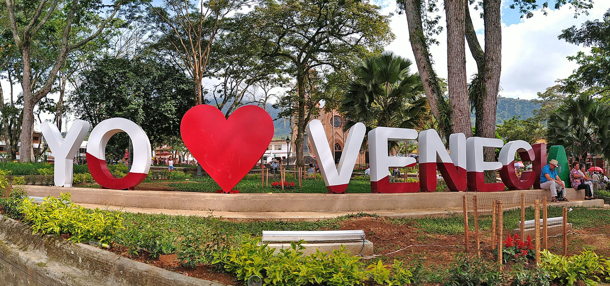

.jpg)

.jpg)
VENTURS S.A.S busca dinamizar el sector turístico, por medio de políticas de turismo sostenible y además satisfacer las necesidades y expectativas de los usuarios que desean espacios de recreación, esparcimiento y educación en los atractivos naturales del municipio de Venecia y todo el Suroeste Antioqueño, a través de la observación, el estudio de los valores naturales y de los aspectos culturales relacionados con ellos. Se busca aprovechar el potencial ecológico y del agro, en beneficio de los actores involucrados, enmarcado dentro de los parámetros de desarrollo humano sostenible y armonía con la naturaleza.
VENTURS S.A.S será la empresa líder en el mercado de servicios turísticos en el Suroeste Antioqueño para el año 2025; buscará las mejores alianzas estratégicas que le permitan al usuario obtener un servicio integral y de alta calidad. Logrando así un posicionamiento de imagen corporativa y satisfacción total de acuerdo a las expectativas de sus clientes.
Somos una empresa dedicada a promover el desarrollo y el fortalecimiento de la cadena turística regional, nacional e internacional, bajo los parámetros del turismo sostenible, aportando al mejoramiento de la calidad de vida de las comunidades relacionadas con este sector económico y comprometiéndose con su crecimiento individual y desarrollo de la región.